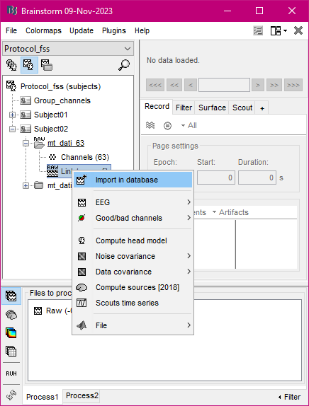
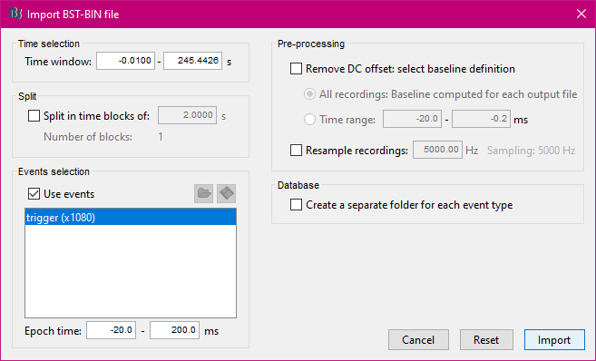
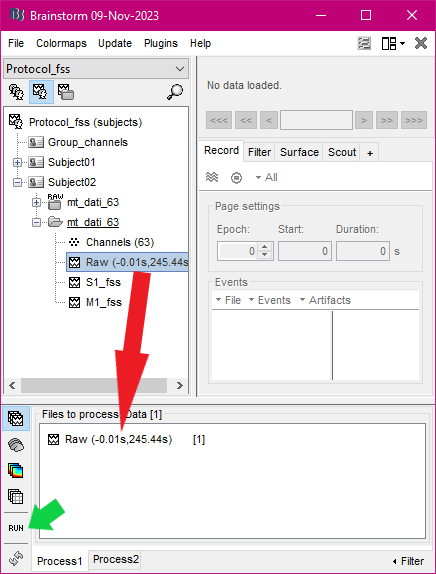
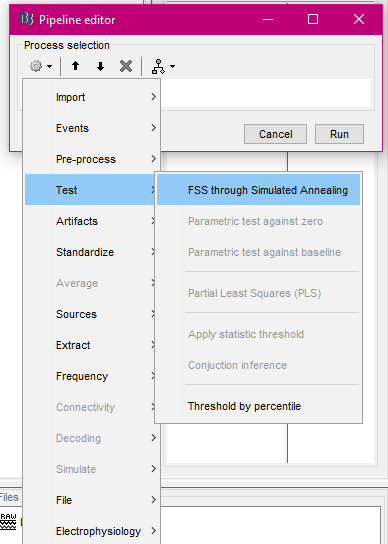
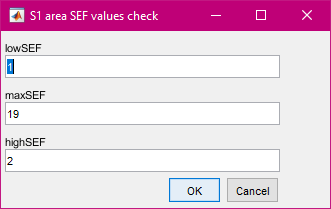
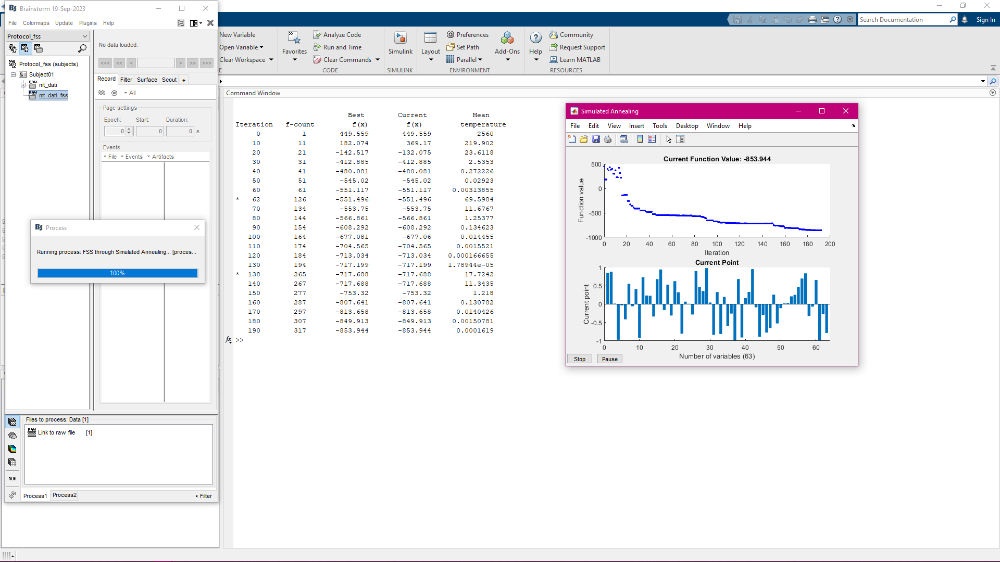
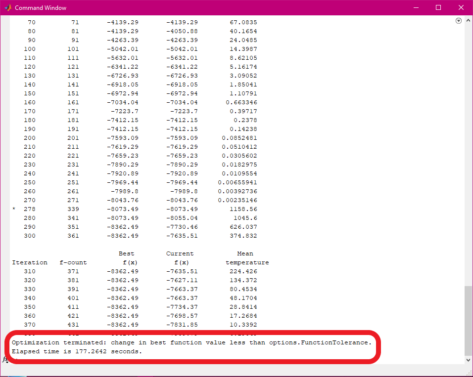
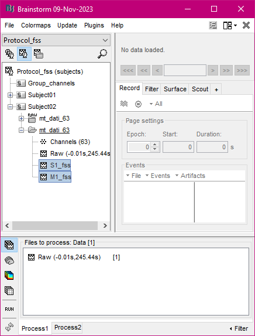
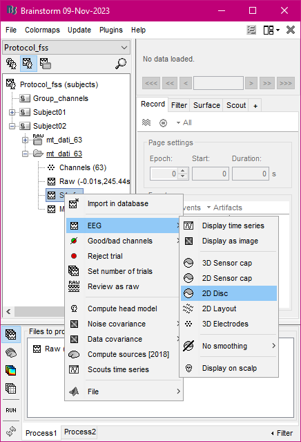
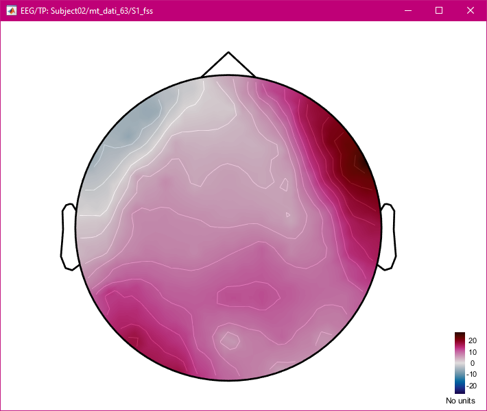

How to use the process¶
Data import¶
This process doesn’t work on raw files, so that you could need to import your raw files in the Brainstorm database: to do this, just right-click on the file you want to use and select the “Import in database” item.
Set the proposed options leaving unchecked the “Create a separate folder for each event type” item, then press the “Import” button
Running the plugin¶
In the database explorer, drag and drop the file you want to work out into the “Process1” tab at the bottom of the window, then click on the “RUN” button on the left
In the Pipeline editor window, click on the first button to see all the categories of processes available: choose the “Test” category, then click on the “FSS through Simulated Annealing” item
Set the options in the process GUI as you need (see Process GUI screenshot), then click on the “Run” button at the bottom of the window to make the process start. You can check the SEF values in the windows appearing before the optimization starts
Visualize the results¶
While the optimization process is running, you should see on your screen something like the image below.
When the process ends its job, two lines appear at the bottom of the Matlab Command Window: the first indicates which stopping criteria caused the algorithm to end, the second shows how much time was spent to reach the end
A new file is now available in the database explorer: the first part of the file’s name stands for the extracted brain area, while the suffix “fss” means that the process has been applied. In the figure below there are 2 files, each one resulting from a different run
To visualize the signals distribution on the scalp, obtained through the FSS process, right-click on the new file, then click on the “EEG” item and finally on the “2D Disc” item as shown below
If everything went well, you should see the scalp distribution of the extracted signals
